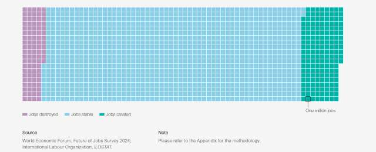
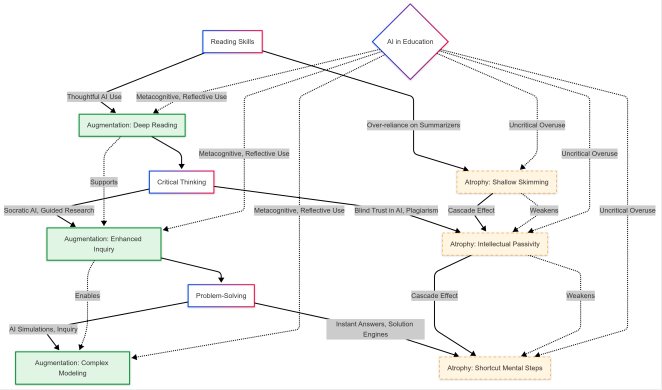

Будущее работы и образования
Из всех аспектов влияния ИИ именно изменения в сфере труда и обучения затрагивают практически каждого человека. Какую работу оставим машинам, а какую сохраним за собой? Как готовить специалистов к миру, где ИИ — стандартный инструмент, а не диковинка?
Работа: автоматизация и новые профессии
Масштабные исследования показывают, что ИИ действительно заменит многие существующие профессии, но одновременно создаст новые, которые сегодня сложно вообразить. По прогнозам McKinsey, к 2030 году от 75 до 375 миллионов работников (около 14% глобальной рабочей силы) будут вынуждены сменить профессиональную сферу из-за цифровизации и автоматизации. Однако, согласно отчёту Всемирного экономического форума (WEF) «Будущее рабочих мест 2025», работодатели ожидают, что ИИ создаст 170 миллионов новых рабочих мест по всему миру, хотя и ликвидирует около 92 миллионов существующих. Ключевой вывод: чистая динамика положительна, но требует беспрецедентной переквалификации.

Прогноз изменения количества работ к 2030 году по WEF.
Наиболее защищёнными от автоматизации остаются профессии, требующие сложного социального взаимодействия, творческого решения нетипичных задач и физической работы в меняющейся среде (например, сантехники, медсёстры, психологи). Напротив, наиболее уязвимы рутинные офисные работы — операторы ввода данных, бухгалтеры начального уровня, копирайтеры простых текстов. При этом ИИ не столько «убивает» профессии, сколько трансформирует их содержание: программист будущего меньше пишет код вручную и больше занимается архитектурой и валидацией кода, сгенерированного моделью.
Образование: пересмотр целей и методов
Традиционная система образования, построенная на запоминании фактов и выполнении типовых задач, теряет смысл. Если ИИ может мгновенно написать эссе или решить уравнение, чему тогда учить? Исследователи из Стэнфордского университета предлагают сместить фокус с «знания фактов» на «умение задавать правильные вопросы», критически оценивать результаты ИИ и этически осмыслять последствия их применения. В докладе ЮНЕСКО 2025 года подчёркивается необходимость развития мета-навыков: адаптивности, совместной работы с ИИ, информационной гигиены.

Дуальный эффект ИИ в обучении: аугментация и атрофия чтения, критического мышления и навыка решения проблем.
Прогрессивные университеты уже внедряют политики «ИИ-грамотности»: студенты не просто могут, но обязаны использовать ИИ для решения задач, но при этом детально документировать своё взаимодействие с моделью, анализировать её ошибки и предлагать улучшения. Такой подход готовит не «пользователей», а «соавторов» ИИ, способных контролировать и направлять технологию.
Будущее работы и образования в эпоху ИИ — это не конец занятости, а её глубокая трансформация. Массовая автоматизация рутинных задач потребует от людей развития уникально человеческих качеств: критического мышления, эмпатии, способности к совместному творчеству с ИИ. Системы образования должны перейти от передачи информации к воспитанию адаптивности и ИИ-грамотности. Ключевой вызов — обеспечить справедливый доступ к переквалификации, чтобы технологический прогресс не оставил миллионы людей за бортом.